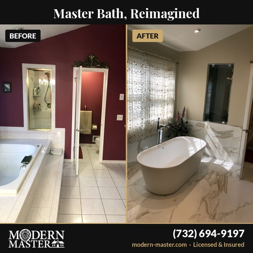
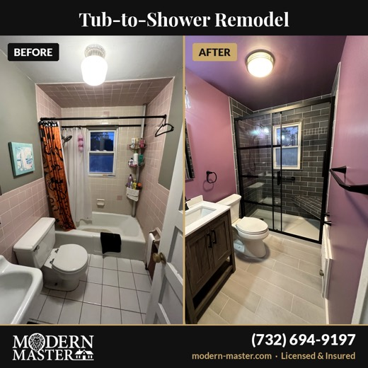
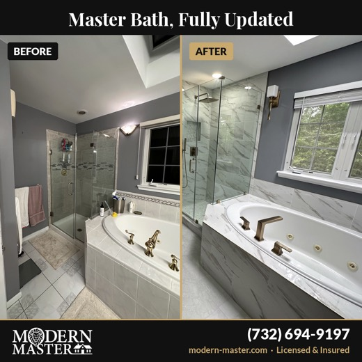
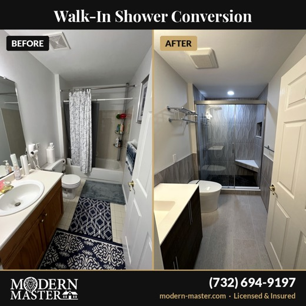

Each carries your name, number and "Licensed & Insured" on the picture, so people see you even when they do not click. A fifth is paused — it spent money and brought nothing.
Your form asked three things: what the project is, when they want to start, and their name and number. Every enquiry arrived looking the same on your phone — you could not tell a small half bath from a full primary bathroom until you were already on the call. So we added one more question, using your own numbers, the same ranges you wrote out in August:
What this does for you. Two things.
Expect fewer enquiries than last month. That is the point of the change, not a fault in it. You can only build two bathrooms a month — four good names beats ten weak ones, and the quiet ones cost you the most time.
The "opportunity score" of 68. It is not a score for your results and it does not affect who sees your adverts. It is Facebook marking how many of its own suggestions you accepted — and most of them are "spend more" and "let us pick your audience". We turned several down on purpose: the income targeting, the age limit, the town boundaries. Those are what keep your money in the towns you asked for. A 68 with four enquiries and a site visit beats a 95 with none. Ignore it.